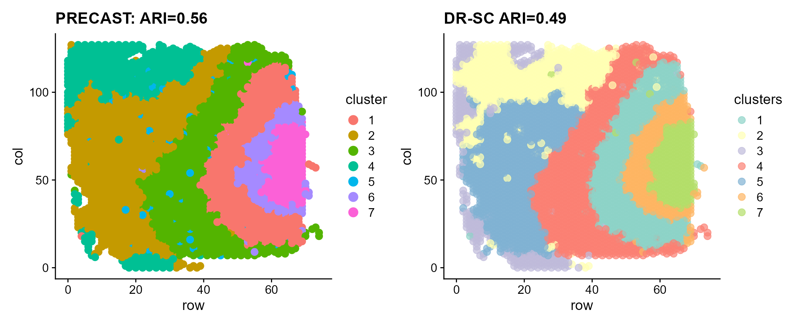
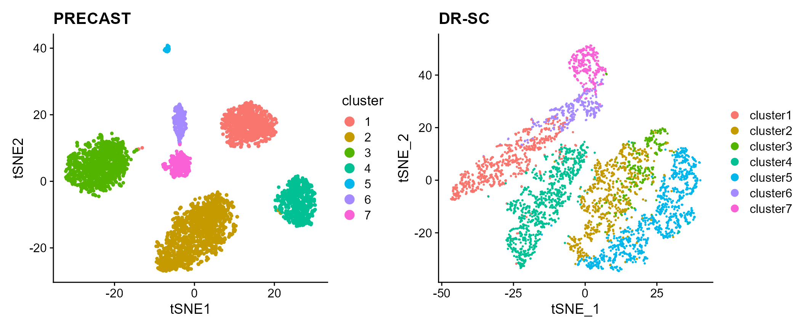

vignettes/PRECAST.DLPFC.Rmd
PRECAST.DLPFC.RmdThe package can be loaded with the command:
Loading data and create a Seurat object.
# Data website: https://github.com/feiyoung/DR-SC.Analysis/tree/main/data/DLPFC_data Require
# two directories for eahc dataset: spatial and filtered_feature_bc_matrix
setwd("D:\\LearnFiles\\Research paper\\ProPCA\\DR-SC.Analysis\\data\\DLPFC_data\\")
dat_tmp <- readRDS("151672.rds")
suppressPackageStartupMessages(library(SingleCellExperiment))
library(Seurat)
meta_data <- as.data.frame(colData(dat_tmp))
seu <- CreateSeuratObject(counts = dat_tmp@assays@data$counts, meta.data = meta_data)
seu
#> An object of class Seurat
#> 33538 features across 4015 samples within 1 assay
#> Active assay: RNA (33538 features, 0 variable features)Create a PRECASTObj object to prepare for PRECAST models.
library(PRECAST)
preobj <- CreatePRECASTObject(seuList = list(seu))
## check the number of genes/features after filtering step
preobj@seulist
#> [[1]]
#> An object of class Seurat
#> 2000 features across 4015 samples within 1 assay
#> Active assay: RNA (2000 features, 2000 variable features)
## Add adjacency matrix list for a PRECASTObj object to prepare for PRECAST model fitting.
PRECASTObj <- AddAdjList(preobj, platform = "Visium")
## Add a model setting in advance for a PRECASTObj object. verbose =TRUE helps outputing the
## information in the algorithm.
PRECASTObj <- AddParSetting(PRECASTObj, Sigma_equal = FALSE, coreNum = 1, maxIter = 30, verbose = TRUE)For function PRECAST, users can specify the number of clusters \(K\) or set K to be an integer vector by using modified BIC(MBIC) to determine \(K\). Here, we use user-specified number of clusters.
### Given K
PRECASTObj <- PRECAST(PRECASTObj, K = 7)
#> fitting ...
#>
|
| | 0%
|
|=================================== | 50%
|
|======================================================================| 100%
#> variable initialize finish!
#> predict Y and V!
#> diff Energy = 4.506061
#> Finish ICM step!
#> iter = 2, loglik= -2251682.250000, dloglik=0.998951
#> predict Y and V!
#> diff Energy = 4.270979
#> Finish ICM step!
#> iter = 3, loglik= -2236851.000000, dloglik=0.006587
#> predict Y and V!
#> diff Energy = 60.451407
#> Finish ICM step!
#> iter = 4, loglik= -2230988.750000, dloglik=0.002621
#> predict Y and V!
#> diff Energy = 13.071136
#> Finish ICM step!
#> iter = 5, loglik= -2227767.750000, dloglik=0.001444
#> predict Y and V!
#> diff Energy = 17.226305
#> Finish ICM step!
#> iter = 6, loglik= -2225801.000000, dloglik=0.000883
#> predict Y and V!
#> diff Energy = 7.770367
#> Finish ICM step!
#> iter = 7, loglik= -2224509.750000, dloglik=0.000580
#> predict Y and V!
#> diff Energy = 10.726838
#> Finish ICM step!
#> iter = 8, loglik= -2223598.250000, dloglik=0.000410
#> predict Y and V!
#> diff Energy = 7.030448
#> Finish ICM step!
#> iter = 9, loglik= -2222931.250000, dloglik=0.000300
#> predict Y and V!
#> diff Energy = 8.411015
#> Finish ICM step!
#> iter = 10, loglik= -2222431.000000, dloglik=0.000225
#> predict Y and V!
#> diff Energy = 8.874634
#> Finish ICM step!
#> iter = 11, loglik= -2222049.000000, dloglik=0.000172
#> predict Y and V!
#> diff Energy = 7.513639
#> Finish ICM step!
#> iter = 12, loglik= -2221751.250000, dloglik=0.000134
#> predict Y and V!
#> diff Energy = 8.425438
#> Finish ICM step!
#> iter = 13, loglik= -2221511.750000, dloglik=0.000108
#> predict Y and V!
#> diff Energy = 9.849991
#> Finish ICM step!
#> iter = 14, loglik= -2221315.250000, dloglik=0.000088
#> predict Y and V!
#> diff Energy = 1.852578
#> Finish ICM step!
#> iter = 15, loglik= -2221150.000000, dloglik=0.000074
#> predict Y and V!
#> diff Energy = 0.052844
#> Finish ICM step!
#> iter = 16, loglik= -2221008.250000, dloglik=0.000064
#> predict Y and V!
#> diff Energy = 1.576106
#> Finish ICM step!
#> iter = 17, loglik= -2220924.750000, dloglik=0.000038
#> predict Y and V!
#> diff Energy = 1.470432
#> Finish ICM step!
#> iter = 18, loglik= -2220812.000000, dloglik=0.000051
#> predict Y and V!
#> diff Energy = 0.863281
#> Finish ICM step!
#> iter = 19, loglik= -2220721.000000, dloglik=0.000041
#> predict Y and V!
#> diff Energy = 1.543170
#> Finish ICM step!
#> iter = 20, loglik= -2220625.500000, dloglik=0.000043
#> predict Y and V!
#> diff Energy = 0.892666
#> Finish ICM step!
#> iter = 21, loglik= -2220550.000000, dloglik=0.000034
#> predict Y and V!
#> diff Energy = 0.914737
#> Finish ICM step!
#> iter = 22, loglik= -2220513.000000, dloglik=0.000017
#> predict Y and V!
#> diff Energy = 2.705014
#> Finish ICM step!
#> iter = 23, loglik= -2220474.750000, dloglik=0.000017
#> predict Y and V!
#> diff Energy = 1.232553
#> Finish ICM step!
#> iter = 24, loglik= -2220414.750000, dloglik=0.000027
#> predict Y and V!
#> diff Energy = 1.453636
#> Finish ICM step!
#> iter = 25, loglik= -2220365.000000, dloglik=0.000022
#> predict Y and V!
#> diff Energy = 2.522305
#> Finish ICM step!
#> iter = 26, loglik= -2220331.500000, dloglik=0.000015
#> predict Y and V!
#> diff Energy = 4.259666
#> Finish ICM step!
#> iter = 27, loglik= -2220272.750000, dloglik=0.000026
#> predict Y and V!
#> diff Energy = 2.559539
#> Finish ICM step!
#> iter = 28, loglik= -2220231.500000, dloglik=0.000019
#> predict Y and V!
#> diff Energy = 3.192598
#> Finish ICM step!
#> iter = 29, loglik= -2220202.250000, dloglik=0.000013
#> predict Y and V!
#> diff Energy = 2.345612
#> Finish ICM step!
#> iter = 30, loglik= -2220176.500000, dloglik=0.000012Select a best model
## backup the fitting results in resList
resList <- PRECASTObj@resList
PRECASTObj <- selectModel(PRECASTObj)
ari_precast <- mclust::adjustedRandIndex(PRECASTObj@resList$cluster[[1]], PRECASTObj@seulist[[1]]$layer_guess_reordered)Integrate the reults into a Seurat object seuInt by the function IntegrateSpaData.
seuInt <- IntegrateSpaData(PRECASTObj, species = "Human")
seuInt
#> An object of class Seurat
#> 2000 features across 4015 samples within 1 assay
#> Active assay: PRE_CAST (2000 features, 0 variable features)
#> 2 dimensional reductions calculated: PRECAST, position
## The low-dimensional embeddings obtained by PRECAST are saved in PRECAST reduction slot.Save the spatial and tSNE scatter plots for clusters from PRECAST
p_sp1 <- SpaPlot(seuInt, item = "cluster", point_size = 3, combine = F)[[1]] + cowplot::theme_cowplot() +
ggplot2::ggtitle(paste0("PRECAST: ARI=", round(ari_precast, 2))) + ggplot2::xlab("row") + ggplot2::ylab("col")
seuInt <- AddTSNE(seuInt, n_comp = 2)
p_tsne <- dimPlot(seuInt, item = "cluster")
p_tsne <- p_tsne + cowplot::theme_cowplot() + ggplot2::ggtitle("PRECAST")Fit DR-SC and Plot the spatial and tSNE scatter plots for clusters
seu_drsc <- DR.SC::DR.SC(PRECASTObj@seulist[[1]], K = 7, verbose = T)
#> iter = 2, loglik= -2238415.509249, dloglik=0.998958
#> iter = 3, loglik= -2232705.762391, dloglik=0.002551
#> iter = 4, loglik= -2230863.892877, dloglik=0.000825
#> iter = 5, loglik= -2229869.345293, dloglik=0.000446
#> iter = 6, loglik= -2229213.013109, dloglik=0.000294
#> iter = 7, loglik= -2228768.611576, dloglik=0.000199
#> iter = 8, loglik= -2228444.871808, dloglik=0.000145
#> iter = 9, loglik= -2228192.002047, dloglik=0.000113
#> iter = 10, loglik= -2227975.928809, dloglik=0.000097
#> iter = 11, loglik= -2227803.475783, dloglik=0.000077
#> iter = 12, loglik= -2227649.620499, dloglik=0.000069
#> iter = 13, loglik= -2227521.988488, dloglik=0.000057
#> iter = 14, loglik= -2227420.257017, dloglik=0.000046
#> iter = 15, loglik= -2227330.615803, dloglik=0.000040
#> iter = 16, loglik= -2227253.569981, dloglik=0.000035
#> iter = 17, loglik= -2227184.996236, dloglik=0.000031
#> iter = 18, loglik= -2227114.051981, dloglik=0.000032
#> iter = 19, loglik= -2227062.172262, dloglik=0.000023
#> iter = 20, loglik= -2227013.467365, dloglik=0.000022
#> iter = 21, loglik= -2226974.634198, dloglik=0.000017
#> iter = 22, loglik= -2226919.422943, dloglik=0.000025
#> iter = 23, loglik= -2226879.061777, dloglik=0.000018
#> iter = 24, loglik= -2226845.617275, dloglik=0.000015
#> iter = 25, loglik= -2226811.676372, dloglik=0.000015
ari_drsc <- mclust::adjustedRandIndex(seu_drsc$spatial.drsc.cluster, PRECASTObj@seulist[[1]]$layer_guess_reordered)
p_tsne_drsc <- DR.SC::drscPlot(seu_drsc)
p_tsne_drsc <- p_tsne_drsc + ggplot2::ggtitle("DR-SC")
p_sp2 <- DR.SC::spatialPlotClusters(seu_drsc) + cowplot::theme_cowplot() + ggplot2::ggtitle(paste0("DR-SC ARI=",
round(ari_drsc, 2)))Compare the clustering performance of PRECAST and DR-SC.

Compare the tSNE visualiztion performance of PRECAST and DR-SC.
p_tsne + p_tsne_drsc
sessionInfo()
#> R version 4.1.2 (2021-11-01)
#> Platform: x86_64-w64-mingw32/x64 (64-bit)
#> Running under: Windows 10 x64 (build 22000)
#>
#> Matrix products: default
#>
#> locale:
#> [1] LC_COLLATE=English_Singapore.1252 LC_CTYPE=English_Singapore.1252
#> [3] LC_MONETARY=English_Singapore.1252 LC_NUMERIC=C
#> [5] LC_TIME=English_Singapore.1252
#> system code page: 936
#>
#> attached base packages:
#> [1] stats4 parallel stats graphics grDevices utils datasets
#> [8] methods base
#>
#> other attached packages:
#> [1] patchwork_1.1.1 sp_1.5-0
#> [3] SeuratObject_4.1.0 Seurat_4.1.1
#> [5] SingleCellExperiment_1.16.0 SummarizedExperiment_1.24.0
#> [7] Biobase_2.54.0 GenomicRanges_1.46.1
#> [9] GenomeInfoDb_1.30.1 IRanges_2.28.0
#> [11] S4Vectors_0.32.3 BiocGenerics_0.40.0
#> [13] MatrixGenerics_1.6.0 matrixStats_0.62.0
#> [15] PRECAST_1.2 gtools_3.9.2.2
#>
#> loaded via a namespace (and not attached):
#> [1] utf8_1.2.2 reticulate_1.25
#> [3] tidyselect_1.1.2 htmlwidgets_1.5.4
#> [5] grid_4.1.2 BiocParallel_1.28.3
#> [7] Rtsne_0.16 munsell_0.5.0
#> [9] ScaledMatrix_1.2.0 codetools_0.2-18
#> [11] ragg_1.2.2 ica_1.0-2
#> [13] future_1.26.1 miniUI_0.1.1.1
#> [15] spatstat.random_2.2-0 colorspace_2.0-3
#> [17] progressr_0.10.1 highr_0.9
#> [19] knitr_1.37 rstudioapi_0.13
#> [21] ROCR_1.0-11 tensor_1.5
#> [23] listenv_0.8.0 labeling_0.4.2
#> [25] GenomeInfoDbData_1.2.7 polyclip_1.10-0
#> [27] farver_2.1.0 rprojroot_2.0.3
#> [29] parallelly_1.32.0 vctrs_0.4.1
#> [31] generics_0.1.2 xfun_0.29
#> [33] ggthemes_4.2.4 R6_2.5.1
#> [35] ggbeeswarm_0.6.0 rsvd_1.0.5
#> [37] bitops_1.0-7 spatstat.utils_2.3-1
#> [39] cachem_1.0.6 DelayedArray_0.20.0
#> [41] assertthat_0.2.1 promises_1.2.0.1
#> [43] scales_1.2.0 rgeos_0.5-9
#> [45] beeswarm_0.4.0 gtable_0.3.0
#> [47] beachmat_2.10.0 globals_0.15.0
#> [49] goftest_1.2-3 rlang_1.0.2
#> [51] systemfonts_1.0.4 splines_4.1.2
#> [53] lazyeval_0.2.2 spatstat.geom_2.4-0
#> [55] yaml_2.3.5 reshape2_1.4.4
#> [57] abind_1.4-5 httpuv_1.6.5
#> [59] tools_4.1.2 ggplot2_3.3.6
#> [61] ellipsis_0.3.2 spatstat.core_2.4-4
#> [63] jquerylib_0.1.4 RColorBrewer_1.1-3
#> [65] ggridges_0.5.3 Rcpp_1.0.8.3
#> [67] plyr_1.8.7 sparseMatrixStats_1.6.0
#> [69] zlibbioc_1.40.0 purrr_0.3.4
#> [71] RCurl_1.98-1.6 rpart_4.1.16
#> [73] deldir_1.0-6 viridis_0.6.2
#> [75] pbapply_1.5-0 cowplot_1.1.1
#> [77] zoo_1.8-10 ggrepel_0.9.1
#> [79] cluster_2.1.2 fs_1.5.2
#> [81] magrittr_2.0.3 GiRaF_1.0.1
#> [83] data.table_1.14.2 scattermore_0.8
#> [85] lmtest_0.9-40 RANN_2.6.1
#> [87] fitdistrplus_1.1-8 mime_0.12
#> [89] evaluate_0.15 xtable_1.8-4
#> [91] mclust_5.4.10 gridExtra_2.3
#> [93] compiler_4.1.2 scater_1.25.1
#> [95] tibble_3.1.7 KernSmooth_2.23-20
#> [97] crayon_1.5.1 htmltools_0.5.2
#> [99] mgcv_1.8-39 later_1.3.0
#> [101] tidyr_1.2.0 DBI_1.1.2
#> [103] formatR_1.11 MASS_7.3-55
#> [105] Matrix_1.4-0 cli_3.2.0
#> [107] igraph_1.3.2 DR.SC_2.9
#> [109] pkgconfig_2.0.3 pkgdown_2.0.2
#> [111] plotly_4.10.0 scuttle_1.4.0
#> [113] spatstat.sparse_2.1-1 vipor_0.4.5
#> [115] bslib_0.3.1 XVector_0.34.0
#> [117] CompQuadForm_1.4.3 stringr_1.4.0
#> [119] digest_0.6.29 sctransform_0.3.3
#> [121] RcppAnnoy_0.0.19 spatstat.data_2.2-0
#> [123] rmarkdown_2.11 leiden_0.4.2
#> [125] uwot_0.1.11 DelayedMatrixStats_1.16.0
#> [127] shiny_1.7.1 lifecycle_1.0.1
#> [129] nlme_3.1-155 jsonlite_1.8.0
#> [131] BiocNeighbors_1.12.0 desc_1.4.0
#> [133] viridisLite_0.4.0 fansi_1.0.3
#> [135] pillar_1.7.0 lattice_0.20-45
#> [137] fastmap_1.1.0 httr_1.4.3
#> [139] survival_3.2-13 glue_1.6.2
#> [141] png_0.1-7 stringi_1.7.6
#> [143] sass_0.4.1 textshaping_0.3.6
#> [145] BiocSingular_1.10.0 memoise_2.0.1
#> [147] dplyr_1.0.9 irlba_2.3.5
#> [149] future.apply_1.9.0